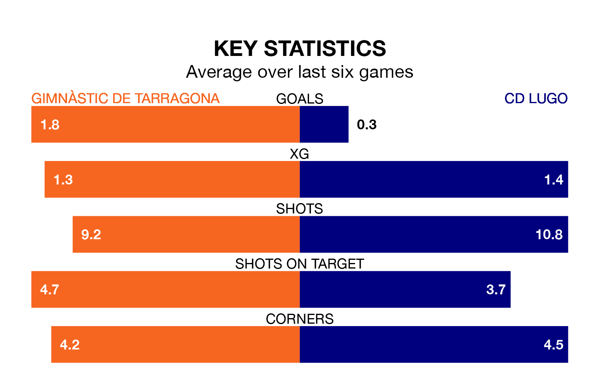

Gimnàstic de Tarragona host CD Lugo at Nou Estadi de Tarragona on early Sunday on the back of four consecutive wins in Primera Division RFEF Group 1.
Gimnàstic de Tarragona have picked up 15 points from their last six games, and they face a Lugo side who have lost their last three matches, and collected four points from the last possible 18.
In the last 10 years, Gimnàstic de Tarragona and Lugo have played each other on 10 occasions. Gimnàstic de Tarragona won four of them, Lugo three, and they drew three times.
On average, Gimnàstic de Tarragona scored 1.5 goals and Lugo 1.0 in those matches.
Their last meeting was on September 30, when Gimnàstic de Tarragona won 1-0 away.
Gimnàstic de Tarragona are fourth in the table after 19 games, of which they have won 10 and drawn five, earning 35 points.
Lugo are seven places behind the home side in 11th, with seven wins and five draws putting them on 26 points.
With 15 goals in 19 games so far this season, the visitors are scoring at below the league average rate with 0.8 goals per game. But they are conceding fewer than average too, letting in 18 goals at a rate of 0.9 per game.
Gimnàstic de Tarragona, meanwhile, are above average scorers, with 1.2 goals per game, compared to a league average of 1.0. They have conceded 0.6 goals per game.
Gimnàstic de Tarragona's last match was on Sunday, a 1-0 win against Celta de Vigo B, with Pablo Fernández Blanco getting the goal for Gimnàstic de Tarragona.
Lugo lost 1-0 against SD Tarazona last time out, on January 13.
Updated: 10:02 (UTC), 19/01/24